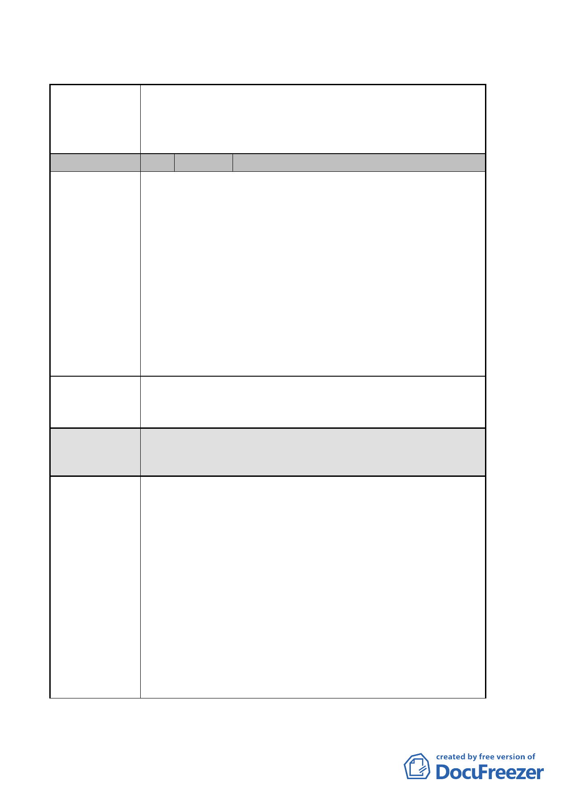

臺北市都市計畫委員會 公民或團體陳情意見綜理表
案名
編號
陳情理由一
變更臺北市中山區長春段二小段 125-1 地號等 47 筆土地第
三種住宅區為第三種住宅區（特）、第三之二種住宅區為第
三之二種住宅區（特）及修訂第三種商業區（特）土地使
用管制細部計畫案
1 陳情人 國泰人壽保險股份有限公司
地下開挖：本案規定地下開挖規模以不超過法定建蔽率加
10%為原則。
說明：
1.本計畫屬配合政府重大政策之開發案，考量地區發展
紋理及提供市民多元良好的都市空間，建築使用規劃
為辦公大樓、一般零售等使用，其使用由住宅區變更
為商業區開挖率依法可提高。
2.另因本基地之土壤屬黏土層性質，其透水性不佳，保
水性能較差；除可藉由基地戶外鋪面全面採透水層鋪
設，增加基地之保水量外，亦可藉由地下室開挖後之
頂板覆土層，增加雨水截流之保水量，進而滿足基地
保水性之需求。
建議辦法一
地下開挖規模建議：未來開挖率應依臺北市都市設計及土
地使用開發許可審議原則之商業區開
挖率檢討並經委員會審議通過為準。
「地下開挖規模」非屬本會審議權責，逕依市府現行規定
委員會決議 辦理，不另行規定。
陳情理由二
開發期程：案開發計畫期程敘明「應於 99 年 3 月 31 日前
取得建築執照並於 99 年 9 月 30 日前開工」，
若未能依開發期程辦理時則「2010 年臺北好好
看」容積得予撤銷。
說明：
1.本計畫案屬於併同辦理都市更新者，依「2010 年臺北
好好看」政策之原公告內容（中華民國 97 年 6 月 26
日府都規字第 09732909000 號函）中「申請建築執照、
開工」，都市更新案不受此限。
2.考量都市計畫、都市設計、都市更新（事業計畫及權
利變換計畫）及環境影響評估…等階段審查時間冗
長，應辦理法定程序較多（公展、選配通知、公聽會…
等），倘依都市計畫說明書中開發期程執行恐有困難。
-8-